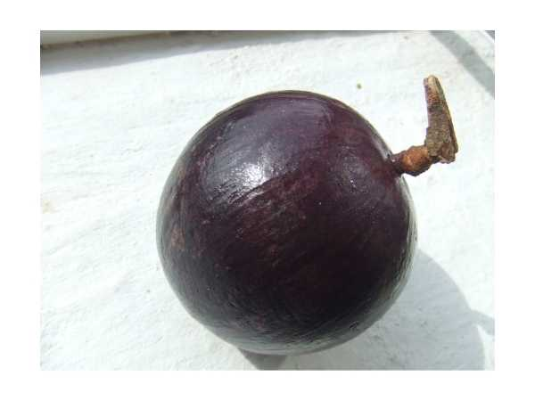

Chrysophyllum cainito
Common Names: Star Apple, Caimito, Milk Fruit, Golden Leaf Tree
Local Name: Paal Pazham (Tamil), Sitaphal (regional Hindi)
Family: Sapotaceae
Origin: Central America and the Caribbean
Plant Type: Perennial evergreen tree
Variety: Purple-skinned variety with milky white sweet pulp
Average Lifespan: 40–80 years
| Growth Habit | Large ornamental tree with broad, dense, rounded canopy |
| Plant Size | 8–20 meters tall; canopy spread 8–15 meters |
| Leaves | Alternate, elliptic, 5–15 cm long; glossy dark green above, golden-brown silky pubescence beneath |
| Flowers | Small, purplish-white, 5-petaled, clustered in leaf axils; inconspicuous |
| Flower Characteristics | Fragrant; appear in clusters along branches; attract bees and small insects |
| Fruit | Round, 5–10 cm diameter; smooth skin; soft, sweet, milky-white gelatinous pulp with star pattern when cut crosswise |
| Fruit Color | Deep purple to dark violet skin; white to light purple pulp |
| Seed Characteristics | 3–10 flat, hard, dark brown seeds arranged in a star pattern |
| Root System | Deep taproot with extensive lateral root system |
| Climate | Tropical lowland; frost-intolerant |
| Temperature Range | 22–34°C ideal; damaged below 3°C |
| Rainfall Requirement | 1000–2500 mm annually; tolerates short dry spells once established |
| Soil Type | Deep, well-drained loamy to clay-loam soil; tolerates limestone soils |
| Soil pH Preference | 5.5–7.5 |
| Sun Requirement | Full sun (8+ hours daily) |
| Spacing | 8–12 meters between trees |
| Irrigation Method | Basin irrigation or drip; water regularly during establishment |
| Water Requirement | Moderate; drought-tolerant once established |
| Can it Grow in Pots? | Young trees only; eventually needs ground planting due to large size |
| Fertilizer Schedule | 3 times per year — pre-flowering, post-fruit set, post-harvest |
| Recommended Organic Fertilizers | Well-rotted manure, compost, bone meal, wood ash |
| Pesticide Frequency | Minimal; generally pest-resistant |
| Recommended Organic Pesticides | Neem oil for scale insects; fruit bagging to prevent fruit fly damage |
| Mulching Practice | Organic mulch around base; leaf litter provides natural mulch |
| Training System | Central leader system; minimal training needed as tree forms natural shape |
| Pruning Time | After harvest; light pruning to control height |
| How to Prune | Remove dead branches and water sprouts; tip-prune to manage height for harvesting |
| Common Pests | Scale insects, fruit flies, birds, bats |
| Common Diseases | Leaf spot, algal leaf spot, root rot in waterlogged conditions |
| Disease Prevention & Remedies | Good drainage, avoid overhead irrigation, copper-based fungicides if needed |
| Flowering Months | August–October (varies by region) |
| Fruiting Season | February–May; 150–200 days after flowering |
| Days to Harvest | 150–200 days from flowering |
| Harvest Indicators | Fruit turns deep purple, skin becomes slightly soft, fruit detaches easily from stem |
| Average Yield per Plant | 100–300 fruits per tree per year (mature tree) |
| Pollination Type | Insect pollination; partially self-fertile |
| Pollination Notes | Small bees and wasps are primary pollinators; cross-pollination improves fruit set |
| Pollination Details | Flowers attract small insects; partially self-fertile but benefits from cross-pollination |
| Propagation by Seeds | Seeds germinate in 2–4 weeks; seedling trees take 7–10 years to fruit |
| Propagation by Cuttings | Air layering possible but slow; semi-hardwood cuttings with rooting hormone |
| Propagation by Grafting | Veneer or cleft grafting on seedling rootstock; reduces fruiting time to 3–5 years |
| Water Usage | Low to moderate once established; deep roots access groundwater |
| Soil Conservation Practices | Large canopy and deep roots prevent erosion; excellent shade tree |
| Organic Practices Used | Natural leaf mulch, composting, minimal chemical inputs needed |
| Companion Plants | Coffee, cacao, vanilla (as shade-loving understory crops) |
| Biodiversity Benefits | Provides habitat for birds and bats; flowers support pollinators; excellent urban shade tree |
| Commercial Production Regions | Caribbean, Central America, Southeast Asia, South Florida, India (limited) |
| Market Uses | Fresh fruit, ornamental shade tree, timber |
| Processing Uses | Fresh consumption, jams, ice cream, smoothies |
| Market Value (Approx.) | ₹100–300 per kg (India, niche market); higher in export markets |
| Symbolism | Known as "milk fruit" due to milky latex; star pattern in cross-section symbolises celestial beauty |
| Traditional Uses | Bark decoction used in Caribbean folk medicine for coughs; leaf poultice for wounds; latex used as adhesive |
| Calories | 67 kcal per 100g |
| Dietary Fiber | 3.3 g per 100g |
| Vitamin C | 15 mg per 100g |
| Vitamin A | Trace amounts |
| Iron | 0.5 mg per 100g |
| Potassium | 142 mg per 100g |
| Antioxidants | Anthocyanins in purple skin, phenolic compounds, flavonoids |
| Other Key Nutrients | Calcium, phosphorus, niacin |
| Anxiety & Sleep | Not a primary use |
| Immune Support | Vitamin C and antioxidants support immune function |
| Anti-inflammatory Properties | Leaf and bark extracts show anti-inflammatory activity in traditional medicine |
| Heart Health | Fiber and potassium content support cardiovascular health |
| Digestive Health | Dietary fiber aids digestion; fruit pulp is soothing to the stomach |
Disclaimer: Information provided is for educational purposes only and not a substitute for medical advice.
Add your field observations here.